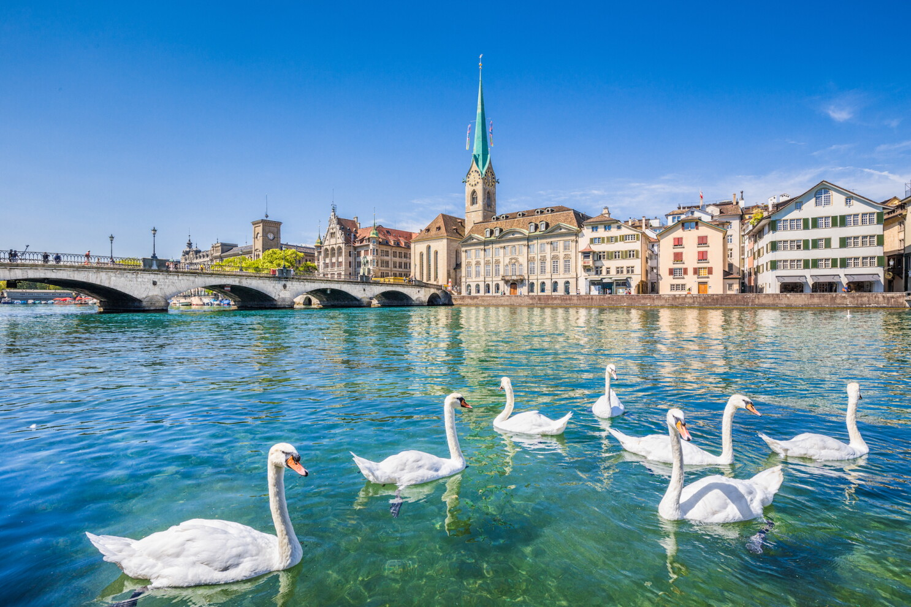

Zurich is one of my favorite cities to visit because of its stunning setting along Lake Zurich, picturesque Old Town architecture, and vibrant culture. Whether exploring historic landmarks, enjoying the surrounding Swiss Alps, or experiencing its world-class food scene, Zurich offers an unforgettable atmosphere.
